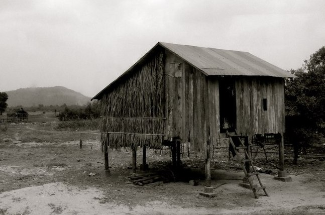
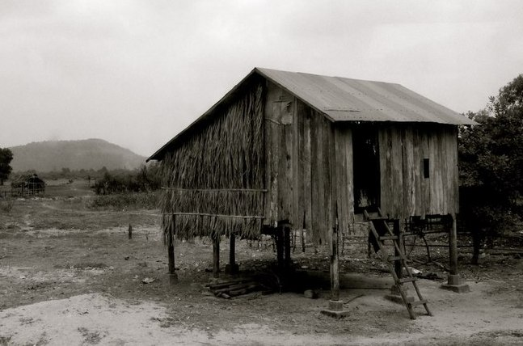

What began as a way to document living and traveling abroad evolved, a few years back, into an active photographic pursuit. My pictures tend to fall into the landscape (rural and urban) and/or travel genres, though I enjoy exploring more abstract realms as well. I predominantly shoot with an Olympus OM-D E-M10, but I also work in film (usually with a Minolta X-700 or a Holga 120S). I curate pairings and trios of photos for my blog, Purposeful Imperfections, and I post larger sets and projects to Flickr.
I also make short videos that are part landscape and part abstraction. Often, a heavy emphasis is placed on sonic elements (including silence). I post these to Vimeo.